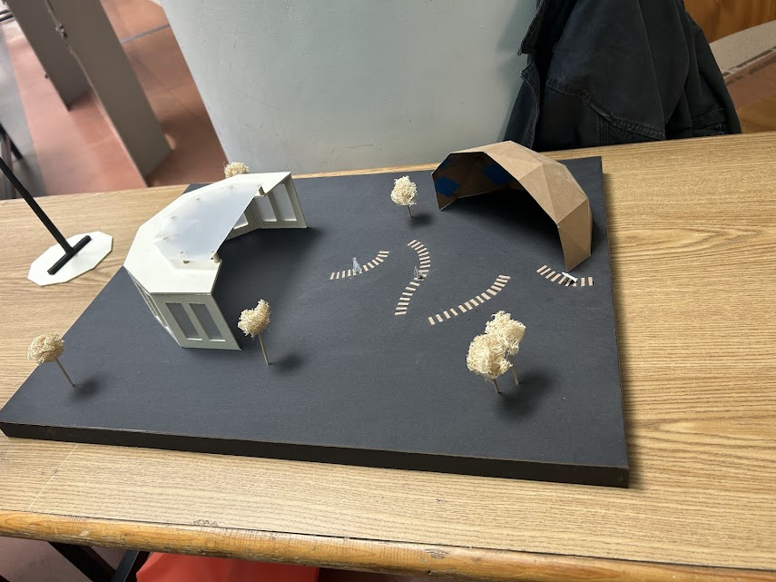
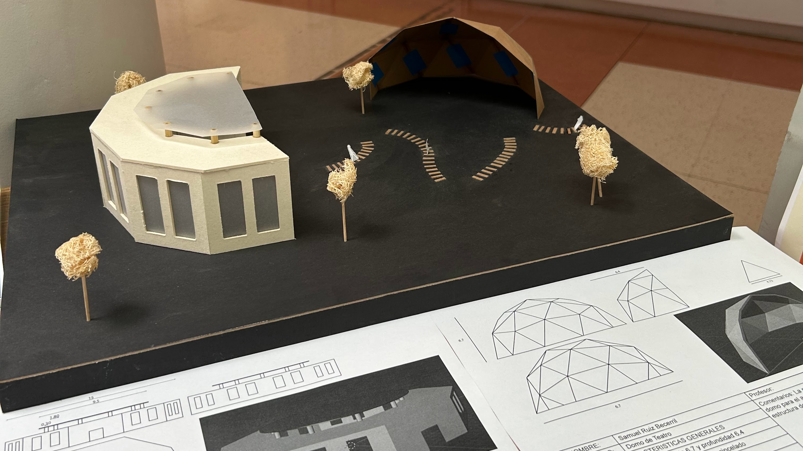

Alameda Poniente
Trimestre 4 / enero 2025

Fue un proyecto de investigacion y desarrollo de un espacio publico, se hizo un estudio de espacios y vimo el porque no funcionaba como un espacio de convivencia.
Concepto
El proyecto giro en torno la idea de inclusion y que las personas se sintieran pertenecientes al espacio, se creo todo un lenguaje pictografico (el problema es que no lo tengo) pero funciono muy bien y tambien se diseño mobiliario propio para el espacio (botes de basura, luminaria y totems).
Proceso
El proceso fue muy complicado porque tuvimos que realizar multiples visitas al lugar y nos dimos cuenta que solo los domingos estaba abierto entonces eso nos complico mucho el estudio del lugar ya que tambien teniamos que hacer entrevistas y el personal de seguridad del lugar no nos permitia grabar ni acceder al lugar tan facil.

Resultado
El resultado fue muy interesante porque logramos una congruencia tanto en los pictogramas, como en el mobiliario del parque. nosotros como plus propusimos la elaboracion de un espacio de exposicion y un techado para un area de teatro que ya estaba en el lugar